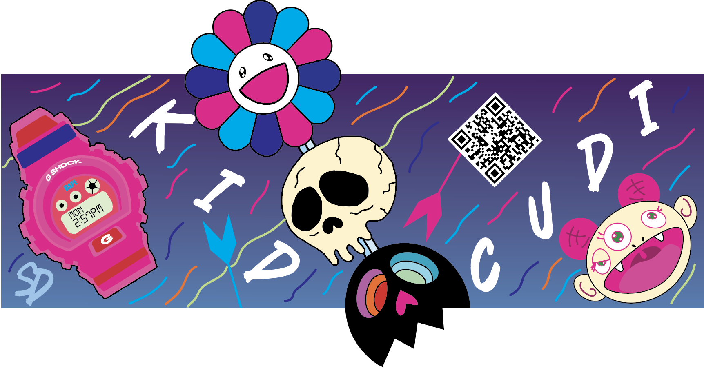
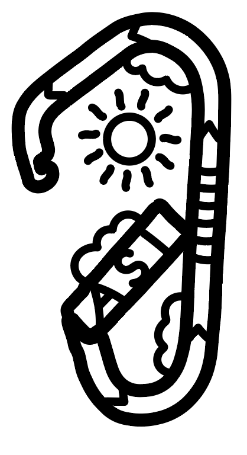
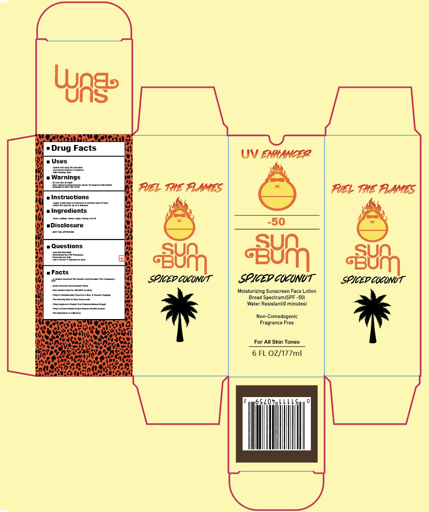

About Me-
My name is Luke Paxton, and I am a fourth-year student at the University of Wisconsin Eau Claire. I am pursuing a major in Graphic Communications with a minor in Global Studies. My aspiration is to work in UX design and advertising , where I can combine my skills in visual communication with my passion for creating user-centered experiences.
Passions and Interest-
I have a diverse range of interests that fuel my creativity. I am particularly passionate about musical engineering, illustration, and creative thinking, which allows me to express myself and innovate in my designs. In addition to my academic and creative pursuits, I am an avid golfer and enjoy skiing during the winter months. These activities not only keep me active but also inspire my approach to design and problems solving.
Academic Achievements-
Throughout my time at the University of Wisconsin Eau Claire, I have been dedicated to my studies, earning three Dean's list certificates. These achievements my commitment to academic excellence and my ability to balance a rigorous course load while engaging in various extracurricular activities.
Professional Experience-
Target:
I have worked at Target for five years, where I gained valuable experience across four diffeent departments. This role enhanced my communication skills and provided me with insights into working within a diverse environment. The experience taught me the importance of teamwork and adaptability in a fast-paced setting.
Hazeltine National:
In addition to my role at target, I have worked at Hazeltine National for seven years as an Honor Caddie, the highest level of prestige in this position. Being an Honor Caddie requires strong communication skills and professionalism, as I interact with players to ensure they have an enjoyable experience on the course. This role has deepened my understanding of client relations and the importance of creating a high-quality environment.
Gallery-
  Contact Information
For inquires or to contact, please reach out to me:
Phone:612-363-3302
Email: Paxtonl7650@uwec.edu
Thank you for taking the time to explore my portfolio! I look forward to potential collaborations and opportunities in the field of graphic communication and UX design.